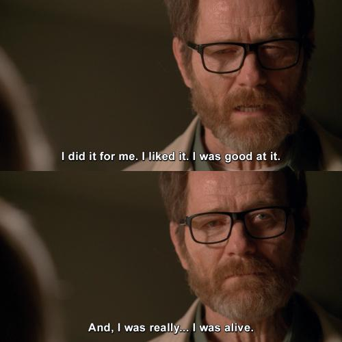

Like on this website or in NSFO :v?
Website: This bitchin ass matrix-esque background. So many matrix copies get so much things wrong with it.
it is NOT random. There is a method in the madness. I studied it for hours *-*
In NSFO: fuck uh. Probably Daemon Protocol??? It is baseless C#...which communicates to Python, which communicates to Unity C# and can communicate to webbrowsers and ...the back end security for the Unity game is... redic.
So yeah thats probably the thing im most proud of.
[What's something about NullForge most people don't see?]
Probably all the times I almost quit. I'm at 14 now.
It gets hard. Making multiple full fledge games, multiple websites, all kinds of shit, just to make a great customer experience.
... for like 3 customers. 😅 Sometimes I wake up and ask my self why I even bother.
And then I get another systems mechanical idea, and off i go anyways 🙃
So it's basically this:

[What's it like watching this stuff get made?]
Fucking Psychotic.
When you have this amount of work load? Whoo boy.
I'll be mid working on the Wiki, have an idea. Break open Obsidian, write down a bitchin idea for a game or website, and back again.
I've coded shit i've forgotten, come back to it and gone "oh...I already did this. Thanks past me.". so yeah 🙃
[What's it like dealing with the other two?]
Tedious *-*
No seriously. I love them, but they can be a might unhelpful sometimes.
Between Auli not... knowing anything gaming (not her fault but still unhelpful when asking... gaming things.)
and pup being head empty no thoughts.
xD sometimes it's a straight brick wall.
Least they remind me to take care of myself >.>
Sometimes I get so into working i've forgotten to eat for 12+ hours...🤷 happens
[What do you think each of the others brings to NullForge?]
As much as I said that Auli not knowing anything video games is tedious...which it is.
:v it's also a very fuckin valuable skill to have around.
You think your UI is good? Try watching someone who doesn't have multiple years of gaming knowledge try to navigate it.
meanwhile pup has.....30+ years of gaming knowledge. Mostly indie games too 🤔 so thats a valuable knowledge well too on the opposite side.
[What do you think NullForge does differently?]
Consistency, and the ability to self reflect.
There is a MILLION of ideas I could throw into any game at any time.
but... it has to:
• Make sense to the lore.
• Mesh with the other mechanics in the game.
• Make the game objectively better. "Fun" is immeasurable.
[Where do you want to see NullForge go?]
I dunno 🤷
I just want people to find it so they can have good games to play.
maybe a lil bit of that "experiencetheworld" in there.
Like. I don't want NSFO to become famous, or start making too much money, because then that starts bringingin a whole hell of a lot of problems.
but if it does... welp. I'll systems engineer the fuck out of that too :v
[What's something people should know before getting into our work?]
Like Weird Al said "Everything you know is wrong".
Not to be taken literally... just.
I don't do things the "correct" or "conventional" way.
The games reflect that :v
[What do you do outside of NullForge?]
Well... I used to be able to say woodworking, drumming, archery, dagorhir,foam smithing,streaming...
but woodworking became part of NSFO soon as I needed it for desks, and backstops and other things.
Drumming became part of NSFO when I made Nullsuite...
Archery,Dagorhir, and FoamSmithing became part of NSFO when Falatur was made...
and Streaming was always kind of part of it, least...before NSFO existed.
SO YEAH. idk. it all is.
[How do you represent yourself online?]
Same way I do IRL. I'm a fuckin 1:1 genuine asshole.
Got my partners, Got my friends. 🤷 If you don't like me? thats your problem :D
ofc I say that and then I'm too nice to everyone 🙄 Can't help it. I was born to be a support class.
Though, i will warn you. I have some of those PINIONS that will piss off most people.
I'm slightly contrarian. Like stated above. I don't do things the "correct" or "conventional" way.
If you *really* wanna know... There's a button for ya.
Allllright. Don't say I didn't warn you.
you wanted a reason to hate me, you got it :D
REMINDER: This was completely unnecessary c: You chose this.
---
Firstly. Lets piss off the right leaning.
1. I am Polyamorous.(If that wasn't fuckin obvious)
2. I'm Genderfluid. (🤷 idk. This seems to do it.)
3. I like men.(Yes, I have a penis. Super ultra mega gay.)
4. I'm Demisexual.(yay for a fake sexuality, amiright?)
5. I'm not Religious(Just seems like a way to control people, or homework.)
---
Secondly. Let's piss of the left leaning.
1. I think neopronouns are stupid. (I aint gonna bother)
2. Equality means the rules apply to you too. (You're not exempt~)
3. Marginalization ≠ infallibility (You can be NB/Trans/POC and be a POS :D)
4. Sometimes someone dislikes *you*, not your demographic (Hell, refer to the previous)
5. Your sexuality/gender identity doesn't inherently make you interesting, special, or deserving of attention.
---
Now~ Let's piss off EVERYBODY!
1. Ai is cool. Relying on it is not. (Still hate how corperations are using it though.)
2. There is no ethical consumption in capitalism. So shutup. (Brb buying Nestle products)
3. Your trauma can explain your behavior. It doesn't automatically excuse it. (Its your responsibilty. Not mine :D)
4. Something being legal doesn't make it ethical. Something being illegal doesn't make it unethical. (perfect example: Piracy)
5. You don't have to agree with someone to respect them. (Hitler loved dogs 🤷)
6. You're not special or unique. We all put our pants on one leg at a time. Except Jim. (I like jim.)
7. The amount of Cheating/NTR porn that exists and is consumed, is insanely high for people who claim to hate cheaters. (Specially Smut books.)
8. No, taking the muffler off your vehicle won't make your penis bigger, or make women like you more. (It's fucking 3 am Stop it. Get some help.)
9. No one is impressed with your computer, or anything else you have that's expensive. They just covet it. (I really don't care if you have 512gb of RAM and a 5090 when all you do is play Minecraft.)
10. The majority of people are stupid, selfish, scared individuals that need therapy, and to actually listen and apply it. ( :D my faith in humanity is fuckin GONE yo)
[Where can people find you?]
UHHHH Discord. on the DP server.
I won't add people I havn't spoke to personally, cause that's just weird. but if you want to email me you can do so @
NullForgeStudios@proton.me
[Anything else you want people to know?]
Butts are great.
Auli information goes Here
and Here
and Here
and also here
[Who are You]
[What do you do at NullForge]
[How did you become part of NullForge?]
.
[What is NullForge to you?]
[What's your relationship with Ardron?]
[What's your favorite NullForge project?]
[What are you most proud of here?]
[What's something about NullForge most people don't see?]
[What's it like watching this stuff get made?]
[What's it like dealing with the other two?]
[What do you think each of the others brings to NullForge?]
[What do you think NullForge does differently?]
[Where do you want to see NullForge go?]
[What's something people should know before getting into our work?]